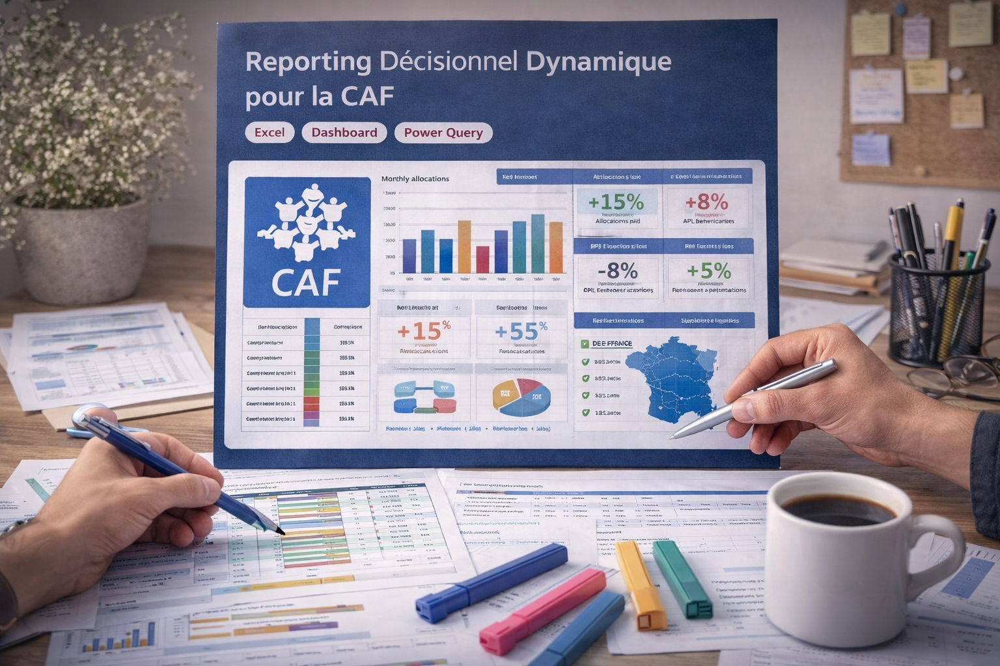

Projets
Survolez pour découvrir · Cliquez pour les détails
Statistique & Modélisation
3 projets

↗
Courbes de croissance par régression polynomiale

↗
Impact de la sonde Swan-Ganz en soins intensifs

↗
Profil clients Cardio Good Fitness
Séries temporelles & Prévision
1 projet

↗
Prévision de la production nucléaire américaine
Data & Reporting
2 projets

↗
Reporting décisionnel dynamique — CAF
↗